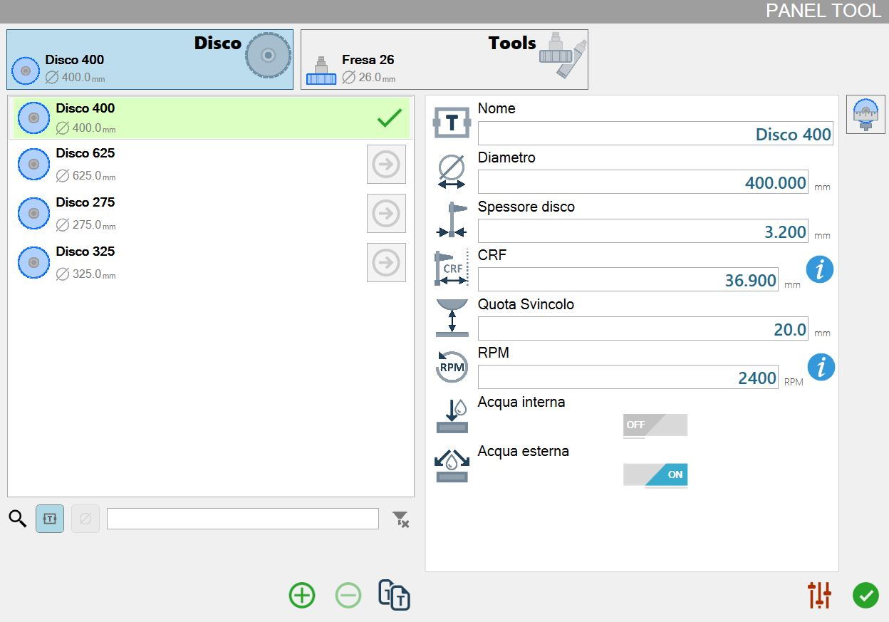
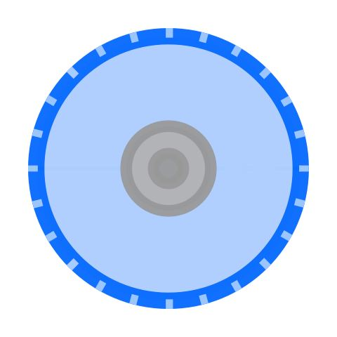
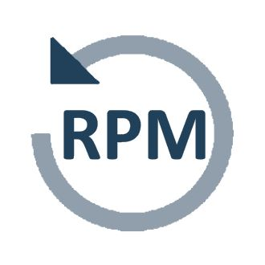
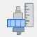

Der folgende Bildschirm ermöglicht dem Bediener die Verwaltung der Maschinenwerkzeuge.

Werkzeugtyp auswählen
Für jeden Werkzeugtyp ist ein Werkzeug ausgewählt, wie im folgenden Beispielbild dargestellt:

 | Scheibe |
 | Tools |
Der Hintergrund des Typs „Scheibe“ ist hellblau, da dies die aktuell ausgewählte Werkzeugkategorie ist.
Es genügt, auf das Rechteck des gewünschten Werkzeugtyps zu klicken, um die darunterliegende Werkzeugliste mit den für diesen Typ verfügbaren Werkzeugen zu aktualisieren.
Nach dem Wechsel des Werkzeugtyps wird automatisch ein Werkzeug ausgewählt, wie im vorherigen Beispielbild gezeigt.
Liste der vorhandenen Werkzeuge für den ausgewählten Werkzeugtyp
Die im folgenden Bild als Beispiel dargestellte Werkzeugliste enthält vier Scheiben: „Scheibe 400“, „Scheibe 625“, „Scheibe 2755“ und „Scheibe 325“.
Die erste Scheibe in der Liste ist derzeit in der Maschine montiert; dies wird durch den hellgrünen Hintergrund und das grüne Häkchen angezeigt.
Im rechten Bereich werden die Parameter des ausgewählten Werkzeugs angezeigt.

Listenelemente
 | Werkzeugtyp |
 | Wichtigste Werkzeuginformationen |
Werkzeug erzwingen |
Suchfilter
Im unteren Bereich der Werkzeugliste befindet sich eine Suchleiste mit folgenden Elementen:

Die Elemente des Suchfilters werden nachfolgend erläutert:
Schaltfläche Suche nach Werkzeugname | |
-20250307-155302.png) | Schaltfläche Suche nach Werkzeugdurchmesser |
 | Schaltfläche zum Aufheben des angewendeten Filters |
Untere Leiste
Die untere Leiste der Werkzeugliste bietet Funktionen zum Hinzufügen und Entfernen von Werkzeugen.
 | Werkzeug hinzufügen |
 | Werkzeug löschen |
 | Werkzeug duplizieren |
Werkzeug hinzufügen
In diesem Fenster wird das Verfahren zur Erstellung eines neuen Werkzeugs durchgeführt. Die erforderlichen Parameter ändern sich je nach zu erstellendem Werkzeugtyp.
Das folgende Bild zeigt das Fenster zur Erstellung eines neuen Werkzeugs für jeden verfügbaren Typ:
Scheibe | Fräser | Kernbohrer |
 |  | |
 |  |  |
Parameterliste für das ausgewählte Werkzeug
Diese Liste enthält alle Parameter des aktuell ausgewählten Werkzeugs.
Bei jeder Änderung der Werkzeugauswahl kann der Bediener die aktualisierten Werte des gewünschten Werkzeugs anzeigen und bei Bedarf jeden Wert ändern.
Die Parameterliste und die zugehörigen Werte werden außerdem aktualisiert, wenn ein anderer Werkzeugtyp (Scheibe / Tools) ausgewählt wird; für jede Kategorie werden die Werte des ausgewählten Werkzeugs angezeigt.
Scheibenparameter
Nachfolgend werden die einer Scheibe zugeordneten Parameter angezeigt.

 | Name |
 | Durchmesser |
 | Scheibendicke |
 | CRF - Flanschdrehzentrum |
 | Freifahrposition |
 | RPM |
 | Internes Wasser |
 | Externes Wasser |
Scheibendrehzahl
Rechts neben dem Parameter RPM befindet sich die folgende Schaltfläche:
 | RPM-Informationen |
In diesem Fenster wird eine Tabelle mit der Umrechnung der Rotationsgeschwindigkeit in RPM abhängig vom Durchmesser der ausgewählten Scheibe angezeigt.
Die für die ausgewählte Scheibe empfohlenen Werte werden grün hervorgehoben.

Parameter für Fräser und Kernbohrer
Nachfolgend werden Parameter für Werkzeuge wie Fräser und Kernbohrer angezeigt.

 | Werkzeuglänge |
Werkzeug antasten
Wenn die Maschine über die optionale Vorrichtung zum Antasten des Werkzeugs verfügt, kann der Vorgang von diesem Bedienfeld aus gestartet werden.
Ermöglicht das Starten eines Zyklus zur Berechnung des Durchmessers bei einer Scheibe bzw. der Länge bei Fräsern und Kernbohrern.
Schaltflächen
Auf der rechten Seite des Bedienfelds befindet sich eine der folgenden Schaltflächen.
 | Scheibenantastung starten |
 | Antastung des Sekundärwerkzeugs starten |
Die Schaltfläche zum Antasten der Scheibe ist nur im Bereich „Scheibe“ des Bedienfelds verfügbar.
Die Schaltfläche zum Antasten des Sekundärwerkzeugs ist nur im Bereich „Tools“ des Bedienfelds verfügbar.
Verfahren
Um den Durchmesser der Scheibe oder die Länge des derzeit in der Maschine montierten Kernbohrers/Fräsers zu messen, die entsprechende Schaltfläche im rechten Bereich des Bedienfelds drücken.
Am Ende des Zyklus aktualisiert das Programm automatisch den Messwert des angetasteten Werkzeugs.

Weitere Schaltflächen
Unten links auf dem Bildschirm befindet sich die folgende Schaltfläche:
 | Zum Bedienfeld „Bearbeitungsparameter der Platte“ wechseln |